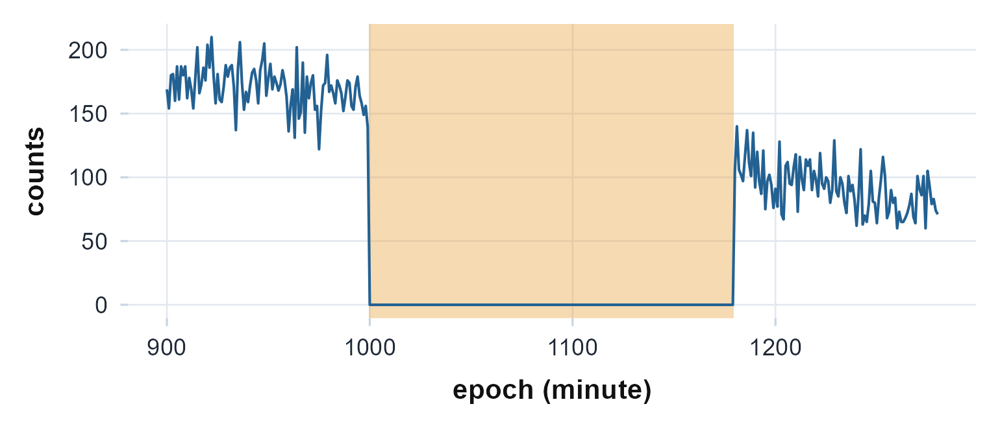

Reading data and wear-time detection
Source:vignettes/articles/io-and-wear-time.Rmd
io-and-wear-time.RmdThe idea, and a rule to remember
Every rhythm metric in actiRhythm starts from the same two columns: a
regular timestamp and a per-epoch
count. Getting your recording into that shape, and
marking the stretches where the device was not on the body, is the whole
job of this article. Whether the data arrives as an ActiGraph
.agd database, an ActiLife .csv export, or a
column in some other data frame, the reader returns the same tidy frame,
and the analysis functions never need to know where it came from.
The rule to carry through this article: a count of zero is
not the same as rest. A taken-off device reads as a long, flat
block of zeros that looks like the deepest sleep you will ever measure,
and if you feed it to the rhythm functions as if it were real rest, it
will distort every number. Detecting non-wear and passing the result as
wear_time is how you keep “the device was in a drawer” from
masquerading as “the subject was perfectly still”.
The shape every reader returns
There is little math here; the contract is structural. Each entry
point hands back a data frame whose first column is a POSIXct
timestamp on a fixed epoch grid and whose remaining columns
are counts:
-
read.agd()opens the SQLite.agddatabase and returns its raw tables;agd.counts()turns that into the tidytimestamp/axis1/axis2/axis3/stepsframe (plusluxand inclinometer columns when present). -
read.actigraph.csv()parses an ActiLife epoch CSV (start time and epoch length come from the header, the count columns are matched by name) and returns the same shape directly. -
counts.from.data.frame()pulls a count column (and optional time column) out of any data frame, for non-ActiGraph series.
Because the shape is shared, a series read three different ways flows
into circadian.rhythm(), cosinor.analysis(),
and the rest without a single change. Reading raw
acceleration (.gt3x, .cwa, GENEActiv
.bin) and computing counts from it is a larger topic with
its own filters and calibration; that lives in the raw pipeline article. Here we stay at the
epoch level.
Reading, and when it breaks
-
A real timestamp is mandatory.
agd.counts()fails fast if neither adataTimestampnor atimestampcolumn is present, because a synthesized sequential index silently breaks every day-level and circadian computation. Fix the source rather than inventing time. -
The epoch grid must be regular. IS, IV, and the
non-wear runs are all defined on evenly spaced epochs.
read.actigraph.csv()builds the grid from the header’s epoch length; if that header line is missing it falls back toepoch_length(60 s by default), so check it when the CSV is unusual. -
Date formats vary. ActiLife writes
M/d/yyyyby default, but exports made on a non-US locale may differ; passdate_formattoread.actigraph.csv()to match. - Zero is ambiguous. A zero count can be genuine stillness or a device that is off. Nothing in the reading step can tell them apart. That is what the non-wear algorithms below are for.
Recovering known truth: an injected device-off block
Before trusting non-wear detection on real data, plant a gap whose location we know and confirm the algorithms recover exactly that block. We build a clean three-day count series from a day-night cosine, then switch the device “off” (a run of zeros) for a known 180-minute window.
set.seed(1)
n <- 3 * 1440
ts <- seq(as.POSIXct("2024-01-01", tz = "UTC"), by = 60, length.out = n)
hod <- as.numeric(format(ts, "%H")) + as.numeric(format(ts, "%M")) / 60
worn <- pmax(0, round(100 + 80 * cos(2 * pi * (hod - 14) / 24) + rnorm(n, 0, 15)))
gap <- 1000:1179 # a 180-minute device-off block at a known location
counts <- worn; counts[gap] <- 0Both detectors return a logical mask (TRUE = wear,
FALSE = non-wear), one value per epoch. We ask each which
epochs it flagged as non-wear and compare to the planted block.
choi <- detect.nonwear.choi(counts)
tro <- detect.nonwear.troiano(counts)
recovered <- function(mask) { idx <- which(!mask); c(first = min(idx), last = max(idx), n = length(idx)) }
knitr::kable(
rbind(planted = c(first = min(gap), last = max(gap), n = length(gap)),
choi = recovered(choi),
troiano = recovered(tro)),
caption = "Both algorithms recover the planted device-off block exactly: epochs 1000-1179."
)| first | last | n | |
|---|---|---|---|
| planted | 1000 | 1179 | 180 |
| choi | 1000 | 1179 | 180 |
| troiano | 1000 | 1179 | 180 |
Each algorithm flags the same 180 epochs we silenced, to the epoch. The figure makes it visual: the shaded band is the recovered non-wear mask, sitting exactly over the flat-line gap.
w <- 900:1280
df <- data.frame(epoch = w, counts = counts[w], nonwear = !choi[w])
ggplot(df, aes(epoch, counts)) +
geom_rect(data = df[df$nonwear, ],
aes(xmin = epoch - 0.5, xmax = epoch + 0.5, ymin = -Inf, ymax = Inf),
fill = "#E8A33D", alpha = 0.4, inherit.aes = FALSE) +
geom_line(colour = "#236192") +
labs(x = "epoch (minute)", y = "counts") +
theme_actiRhythm()
A window of the planted series. The flat zero block is the injected device-off period; the shaded band is the Choi non-wear mask, recovered exactly over it.
The two algorithms are not identical, though. They agree on this clean block but diverge by design, and the differences matter on real data. Choi requires a long window and guards a tolerated spike with flanking all-zero windows; Troiano uses a shorter default window and a count ceiling on spikes (Choi et al., 2011; Troiano et al., 2008). Two short experiments expose the gap.
# (1) a borderline 75-minute gap: longer than Troiano's 60-min frame, shorter than Choi's 90
short <- worn; short[1000:1074] <- 0
c75 <- c(choi = sum(!detect.nonwear.choi(short)), troiano = sum(!detect.nonwear.troiano(short)))
# (2) the same 180-min gap, broken by a single high-count spike of 250
spike <- worn; spike[gap] <- 0; spike[1090] <- 250
csp <- c(choi = sum(!detect.nonwear.choi(spike)), troiano = sum(!detect.nonwear.troiano(spike)))
knitr::kable(rbind(`75-min gap` = c75, `gap with 250-count spike` = csp),
caption = "Non-wear epochs flagged. The two algorithms disagree where their defaults differ.")| choi | troiano | |
|---|---|---|
| 75-min gap | 0 | 75 |
| gap with 250-count spike | 180 | 179 |
The 75-minute gap clears Troiano’s 60-minute frame but not Choi’s
90-minute one, so Troiano flags it and Choi does not. The lone 250-count
spike sits below nothing Choi cares about (it is flanked by zeros, so
Choi absorbs it and keeps the full 180-epoch block), while it exceeds
Troiano’s stoplevel of 100, ending the bout at that minute
and leaving 179. Neither is “right”; they encode different definitions
of non-wear, and you choose to match the literature you are comparing
against.
The recovered mask is exactly what the analysis functions want. Pass
it as wear_time and the rhythm metrics are computed only
over worn epochs:
r <- circadian.rhythm(counts, ts, wear_time = choi)
c(IS = round(r$IS, 3), valid = isTRUE(!is.null(r$IS)))
#> IS valid
#> 0.986 1.000On a real recording
The bundled recording runs the same path: open the .agd,
extract counts, detect non-wear, gate the analysis on the result.
agd <- agd.counts(read.agd(example_agd(1), verbose = FALSE))
c(epochs = nrow(agd), columns = ncol(agd))
#> epochs columns
#> 9919 10
names(agd)
#> [1] "timestamp" "axis1" "axis2" "axis3"
#> [5] "steps" "lux" "inclineOff" "inclineStanding"
#> [9] "inclineSitting" "inclineLying"
wt <- detect.nonwear.choi(agd$axis1)
c(epochs = length(wt), worn = sum(wt), nonwear = sum(!wt),
pct_worn = round(100 * mean(wt), 1))
#> epochs worn nonwear pct_worn
#> 9919.0 4248.0 5671.0 42.8This file carries inclinometer columns, which some sleep routines can use; a quick check tells you whether they are present before you reach for them.
has.inclinometer(read.agd(example_agd(1), verbose = FALSE))
#> [1] TRUEFeeding the wear mask forward is the same one argument as before. The metrics now ignore any device-off stretch.
cr <- circadian.rhythm(agd$axis1, agd$timestamp, wear_time = wt)
c(IS = round(cr$IS, 3), IV = round(cr$IV, 3), RA = round(cr$RA, 3))
#> IS IV RA
#> 0.584 1.293 0.976Reading the numbers
Wear-time output is plain, but the yardsticks matter:
-
Percent worn. A logical mask; its mean is the
fraction of the recording on the body. Many analyses ask for a minimum
number of valid hours per day before a day counts.
circadian.rhythm()enforces that throughmin_valid_hours. -
Non-wear runs, not scattered epochs. Both
algorithms flag runs of at least
frameminutes, so the mask is blocky by construction; isolated zeros inside an active day stay “wear”. That is intentional: a single quiet minute is rest, not a removed device. - Choi versus Troiano. Choi’s longer frame and flanking-window guard make it conservative (it flags less, more confidently); Troiano’s shorter frame and count ceiling make it quicker to call non-wear. Report which you used, and its parameters.
The wider input/output family
The same tidy frame is the hub for several entry and exit points.
An ActiLife CSV, no database needed.
read.actigraph.csv() reads an epoch CSV export and returns
the timestamp/count frame directly, computing the vector
magnitude when the three axes are present.
tf <- tempfile(fileext = ".csv")
hdr <- c(
"------------ Data File Created By ActiGraph wGT3X-BT ActiLife v6.13.4 date format M/d/yyyy at 60 sec ------------",
"Serial Number: MOS2A12345678",
"Start Time 00:00:00",
"Start Date 1/1/2024",
"Epoch Period (hh:mm:ss) 00:01:00",
"--------------------------------------------------",
"Axis1,Axis2,Axis3,Steps")
set.seed(2)
body <- sprintf("%d,%d,%d,%d", sample(0:500, 6), sample(0:300, 6),
sample(0:300, 6), sample(0:20, 6))
writeLines(c(hdr, body), tf)
csv <- read.actigraph.csv(tf)
names(csv)
#> [1] "timestamp" "axis1" "axis2" "axis3" "steps" "vm"
head(csv, 3)
#> timestamp axis1 axis2 axis3 steps vm
#> 1 2024-01-01 00:00:00 340 272 62 3 440
#> 2 2024-01-01 00:01:00 462 203 135 10 522
#> 3 2024-01-01 00:02:00 197 296 230 5 423Any data frame at all.
counts.from.data.frame() is the device-neutral door: name
the count and time columns and it returns
timestamp/counts, ready for the analysis
functions.
df <- data.frame(activity = c(0, 50, 300),
clock = c("2024-01-01 00:00:00", "2024-01-01 00:01:00",
"2024-01-01 00:02:00"))
counts.from.data.frame(df, count_col = "activity", time_col = "clock")
#> timestamp counts
#> 1 2024-01-01 00:00:00 0
#> 2 2024-01-01 00:01:00 50
#> 3 2024-01-01 00:02:00 300Writing back out. write.agd() saves a
counts frame as a standard .agd SQLite database (the same
schema read.agd() opens), so you can round-trip, share, or
hand a cleaned series to ActiLife.
out <- tempfile(fileext = ".agd")
write.agd(agd, out)
back <- agd.counts(read.agd(out, verbose = FALSE))
c(rows_in = nrow(agd), rows_out = nrow(back),
axis1_identical = isTRUE(all.equal(round(agd$axis1), back$axis1)))
#> rows_in rows_out axis1_identical
#> 9919 9919 1From a raw .gt3x, in one step. When you
have a raw file rather than epoch counts, gt3x.to.agd()
computes ActiGraph counts (the agcounts implementation of Neishabouri et al. (2022)) and writes them straight
to an .agd, carrying the device and subject metadata from
the header. It needs the optional agcounts and
read.gt3x packages, so it is shown but not run here.
agd_path <- gt3x.to.agd("subject01.gt3x", epoch = 60)
agd <- agd.counts(read.agd(agd_path))Limitations
- Reading cannot disambiguate zeros. The reader trusts the file; only the non-wear step separates a stationary device from genuine rest, and only as well as its parameters are chosen.
-
Defaults are conventions, not truths. Choi’s
90-minute and Troiano’s 60-minute frames come from validation studies on
hip-worn devices; wrist data and other populations may warrant different
frame,spike_tolerance, andstream/stoplevelvalues. -
CSV header parsing is best-effort. A heavily
customized ActiLife export may hide the epoch length or use an
unexpected date format; verify the first timestamp and epoch spacing
after reading, and set
date_format/epoch_lengthif needed. -
.agdwriting is the count schema, not the full ActiLife object.write.agd()storessettingsanddata; it does not reconstruct sleep, wear-time-validation, or capsense tables an original device file might carry.
Reference and validation
The two non-wear algorithms implement Choi et
al. (2011) and the Troiano et al. (2008) NHANES protocol;
gt3x.to.agd() and the raw readers compute counts with the
open ActiGraph-count algorithm of Neishabouri et
al. (2022), the same family
validated against ActiLife by Brond et al. (2017). actiRhythm’s non-wear masks and
count round-trips are cross-checked against reference implementations in
the Validation article and the package’s
test suite; the raw count computation is documented in the raw pipeline article.